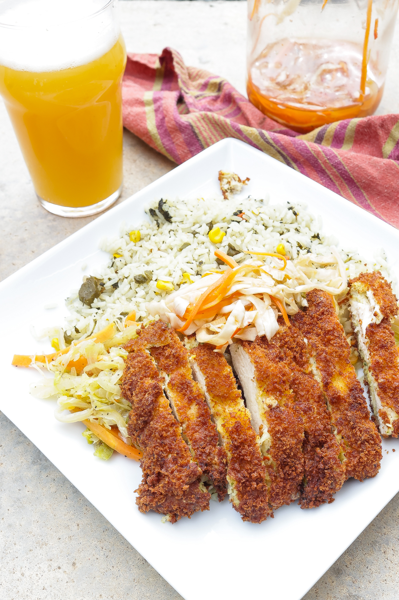

Chicken Katsu
Recipe For Chicken Katsu

Chicken katsu is a Japanese-style fried chicken. It's a thin juicy slice of
chicken and explodes with flavor when you bite into it! Served alongside
white rice and tonkatsu sauce.
Ingredients
- 4 skinless, boneless chicken breast halves.
- Salt
- Pepper
- Flour
- Egg
- Panko Bread Crumbs
- Oil (preferablly neutral oil such as canola or vegetable)
Steps
- First season the chicken on both sides with salt and pepper.
-
Next, place flour, beaten egg, and panko crumbs into separate shallow
dishes.
-
Coat the chicken in the flour, shaking off excess, then dip into egg and
finally press into the panko crumbs until well coated on both sides.
- Heat oil in a large skillet over medium-high hear.
-
Place the chicken in the hot oil and fry until golden brown, 3 or 4
minutes per side.
- Transer to a paper towel lined plate to drain and then enjoy!